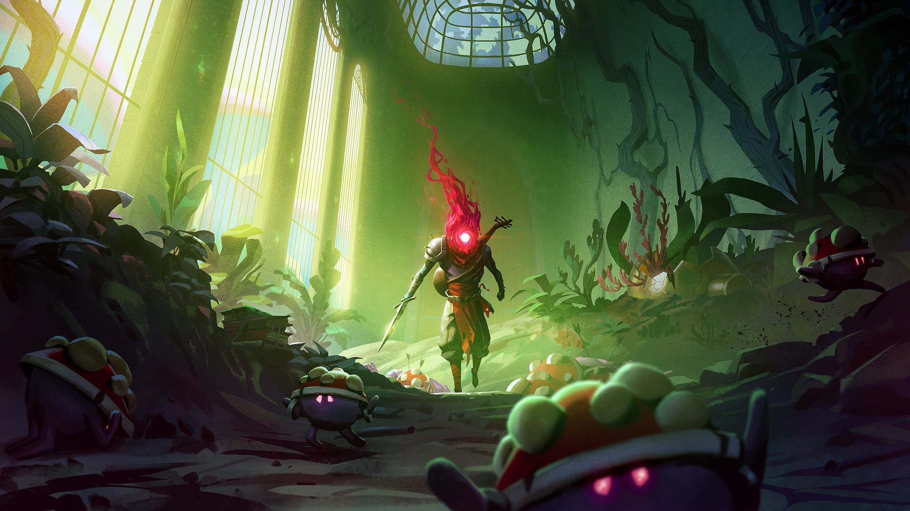
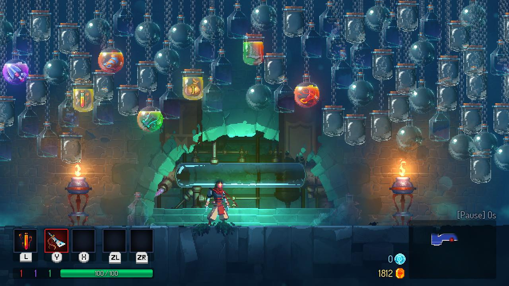
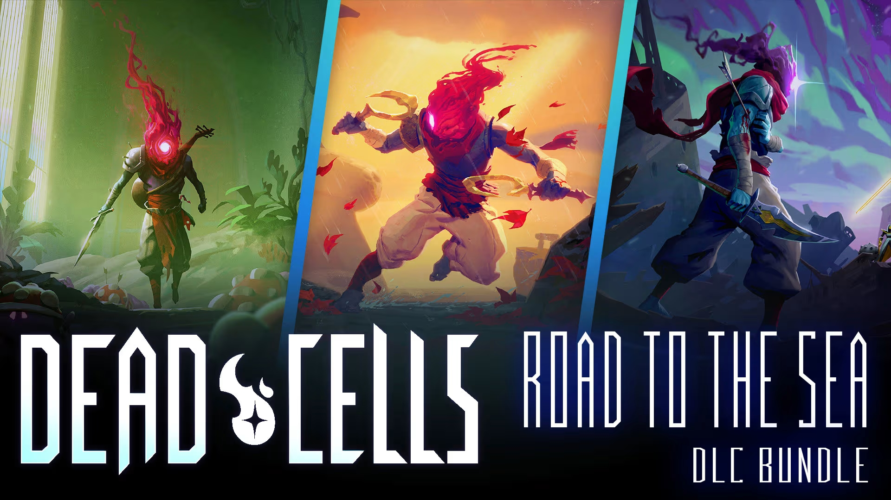

DEAD CELLS
Une référence du jeu d’action et du rogue-lite
Dead Cells est un jeu d’action–plateforme en 2D mêlant avec brio rogue-lite et metroidvania, développé par le studio indépendant bordelais Motion Twin. Sorti le sur PC, PS4, Xbox One et Nintendo Switch, puis sur Android en 2020, le titre s’est rapidement imposé comme une référence incontournable, salué à la fois par les joueurs et la presse spécialisée.
"Dead Cells transforme chaque échec en progression, chaque défaite en apprentissage."
Une créature en quête de liberté
Dans Dead Cells, le joueur incarne une forme de vie mystérieuse, née d’une substance organique inconnue, qui prend possession de corps sans vie afin de s’échapper d’une forteresse en constante mutation. Chaque tentative de fuite est unique : les biomes changent, les ennemis se renouvellent et les armes varient. À travers exploration et combats, le joueur découvre les secrets de cette île-prison tout en débloquant des compétences permanentes.

Des combats fluides et exigeants
Le système de combat repose sur une
action fluide, précise et réactive. Chaque arme –
épées, arcs, sorts, boucliers ou lances – possède son propre style et
peut être améliorée grâce à un
système de butin et de mutations. Le jeu récompense
la maîtrise, la réflexion et le timing plutôt que la chance, offrant
une expérience aussi exigeante que gratifiante.
C’est cette dynamique de progression continue qui nourrit le plaisir
de rejouer sans cesse.
Une expérience sans cesse renouvelée
Chaque partie – ou run – est générée procéduralement : la carte, les ennemis et les objets changent à chaque essai. Contrairement à un rogue-like classique, Dead Cells permet de conserver certains progrès permanents : compétences débloquées, raccourcis vers de nouveaux biomes ou armes déverrouillées. Ce système offre un équilibre parfait entre rejouabilité et progression.
Un hommage moderne aux classiques du metroidvania
Dead Cells rend hommage aux piliers du genre tels que
Metroid et Castlevania. Les cartes
interconnectées, les zones cachées et les pouvoirs nécessaires pour
débloquer certains passages en font un titre d’exploration riche et
intelligent.
Sa direction artistique pixel art, à la fois moderne
et expressive, s’allie à une bande-son immersive pour
créer une atmosphère singulière, parfois oppressante, toujours
fascinante.

Un succès critique et communautaire
Récompensé par plus de 100 distinctions internationales, dont le prix du Best Action Game aux Game Awards 2018, Dead Cells affiche une note moyenne de 90/100 sur Metacritic. Sa communauté active sur Steam, Reddit et Discord partage en permanence mods, stratégies et constructions personnalisées.
Au fil des ans, Motion Twin et Evil Empire ont proposé de nombreuses mises à jour gratuites et extensions payantes, ajoutant de nouveaux biomes, boss, armes et crossovers inspirés d’autres univers. En février 2024, la mise à jour 35 a marqué la fin du développement actif du jeu, offrant une version complète et aboutie.
Une œuvre durable et intemporelle
Dead Cells est bien plus qu’un simple jeu d’action : c’est une expérience de persévérance, d’apprentissage et de maîtrise. Porté par un gameplay précis et une identité visuelle marquante, il s’impose comme un classique moderne, captivant aussi bien pour les nouveaux joueurs que pour les vétérans.